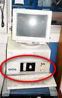

This page contains short references and screen-shots from old GUI projects developed for different customers.
Drevo-M
The Application was develioped when I was working in OTIS Elevator Company. The Main Purpose of the application is to allow to an operator to enter some parameters of an elevator delivering contract and press a button to get full package of documents for the contract. The Application had its own domain specific language and mainly its work was based on prepared templates which were modified by scripts written in the DSL. The Application allowed to form text files, AutoCAD sketches (through AutoLisp interface) and even prepare binary files. It was entirely developed in Delphi 3 and was actively used in processes of the Saint-Petersburg OTIS Elevator factory.
COP (Car Operating Panel) tester
Because OTIS Elevator company produces elevators, it had needs in easy and powerful tool for its SPB factory to allow to a worker to test COP panels during assembling. I had got the order and implemented some software-hardware complex based on Atmel AVR microcontroller connected to COP and PC. The PC software part was developed in FORTH and could be started under DOS on PC AT 386 with 1MB memory, and microcontroller software was developed in AVR assembler. The Heart of the system was Atmel AVR AT4414. its power was enough for the system. As I know the complex was in very hard usage as minimum for 2 years.


Load diagram
During my job for OTIS Elevator Company I also implemented some information system to provide control for top-management of the SPB factory for elevator contract promotion. The Project is interesting because it was my first Java project (in Java 1.1) and for it I developed dedicated HTTP server (it was called Titmouse, about 200 kB JAR) which had functions to work with DB. Inside of the server, FORTH interpreter was implemented and all dynamic web pages and scripts on the server side, were written in FORTH language (I called the technology Forth Server Pages). As DB server we used MS Access and it was interesting that Pentium 2 200 Mhz and Java 1.1 server with interpreting scripts was enough for work of about 15 386 clients (working uner Windows 3.11). The System was in usage for 2 years and then it was rewritten under Pearl.
Logotone
In 2001 I was working for well-known (in that time) brand INFON and I had task to develop pair online applications to provide online editing of mobile content to our users. The First one was online player of OTT tones (format for Nokia mobile phones), a user could hear a melody online through the applet.
The Second application was a Java applet to allow conversion of uploaded images into format compatible with SMS. It supported several algorithms for conversion.
The Third one was online editor to provide online editing and creation of black-white images which then could be delivered to user's mobile phone.
Form editor
Since 2003 I was involved in game development for mobile phones and iTV devices and UI is super-important part of such kind of software. I developed some IDE to prepare and edit UI for different devices, it generated binary files and assets based on entered data. For long time it was the main tool in RRG Ltd. which saved huge time for us.
SMS Catalog IDE
Once upon a time I was on weekend and caught an idea that it would be possible to automate process of SMS sending and form that as some catalog where user could just select needed service. I developed the first version for weekend and testing showed me that it worked just brilliant! I improved the J2ME part, added support of small embedded games and notified some of my partners (mobile content providers) about such solution. The IDE part was developed to automate generation process of such universal catalogs delivered to mobile phones. The System worked well and brought a lot of money but lately it was lost in hard fighting with clones on market.
Video preview IDE
ZED company asked me to develop some tool to generate mobile application based on several video frames from video and provide possibility to buy the full video through SMS. So the IDE was born. It loaded video file and extracted it to frames, then it converted frames into images supported in mobile devices, connected player and produced into single J2ME application.